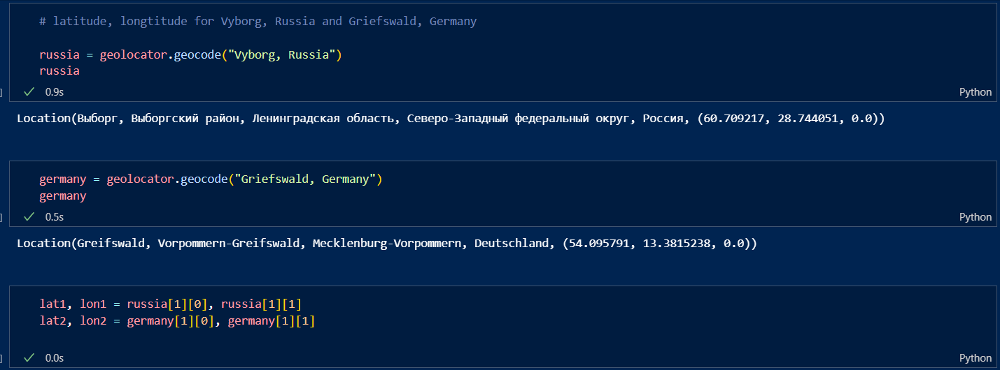
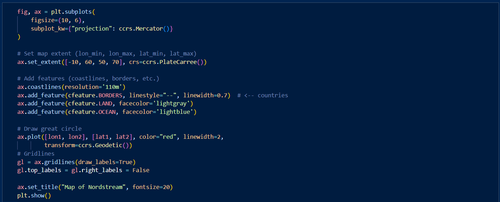
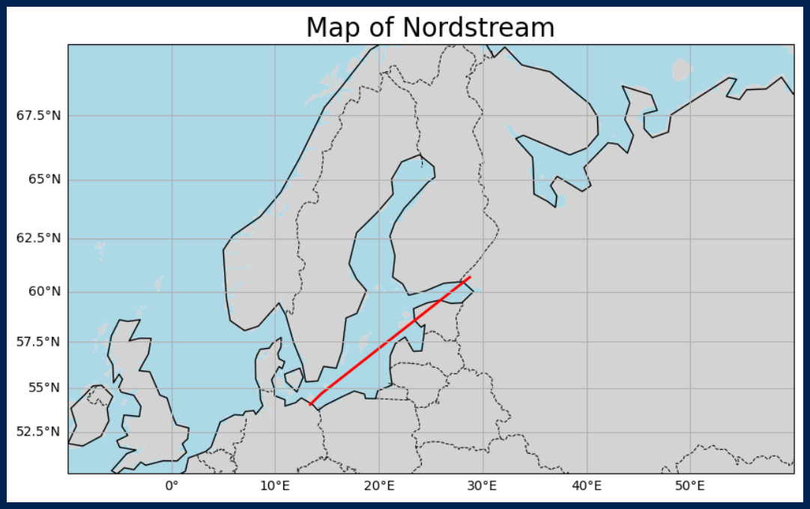

Introduction
Indian Supreme Court judgments are famously long, intricate, and packed with layered reasoning. For anyone working with public policy, law, or research, turning these massive texts into clear, reliable summaries is almost a project by itself. That challenge is exactly what motivated this experiment: testing whether modern language models can summarise Indian legal judgments with accuracy, structure, and speed.
To explore this, I put three very different models to work — Google Gemini, Phi-4 Mini (running locally through Ollama), and Facebook BART. Each comes with its own strengths, quirks, and limits, making them ideal for a comparative test. My goal wasn’t to chase perfection, but to understand how well these models handle long-form judicial reasoning, how they behave under load, and where they start to struggle.
This blog documents that journey — from extracting text to chunking, prompting, debugging, and watching the models do their best (and sometimes fail spectacularly) to summarise some of India’s most complex constitutional judgments. It’s a practical look at what really happens when AI meets legal analysis, and what we can learn from the process.
NordStream Pipeline
The Nord Stream pipeline is a major natural gas pipeline system running under the Baltic Sea, directly connecting Russia to Germany. Its purpose is to transport Russian natural gas to European markets, bypassing traditional overland transit countries like Ukraine and Poland.



1. The project has two phases: Nord Stream 1, operational since 2011–2012, with two parallel lines. Nord Stream 2 was completed in 2021 but never brought into service due to geopolitical tensions and sanctions following Russia’s actions in Ukraine.
2. The Nord Stream Pipelines allow for the transfer of approximately 55 billion cubic meters of natural gas per year.
3. The huge size of this pipeline is the cause for countries like the US, to be critical of the pipeline because it increases the dependance of Germany and therefore of Europe on Russia. In turn this also increases the political influence of Russia on Europe.
4. Germany is the strongest economy in Europe, and therefore it directly affects the strategy and policy of the European Union.
5. Another reason why this project is important is because it bypasses transit countries like Estonia, Latvia and Lithuania who then cannot exert any influence on the working of the pipeline.
The BRI involves investments in approximately 70 countries and international organisations connecting two ends of Eurasia along with stops in Africa and Oceania to create a unified large market, an economic development zone. The connection will be made with both a maritime route across the sea and an overland route. The goal is to complete the entire project in around 2050.
Geopolitical Implications:
China will provide aid to all the countries in this route in order to build the necessary infrastructure which include railways, roads, ports, energy systems and telecommunication networks.
China will purchase mines for genwration of energy and laying down transmission networks.
Chinese enterprises will operate across all the cities and locations. The Asian Infrastructure Investment Bank will play a significant role in this.
This is intended to propel the currency of China, Renminbi, to become the main investment currency in all the countries involved. China will also purchase
It will also involve cultural exchanges and integration to bring the nations closer and make them familiar with each other's culture, increase mutual understanding and peace. This will extend Chinese economic and political influence.
Countries that have been positive about this: Malaysia, Pakistan and Sri Lanka, Tajikistan and Kyrgystan
Vietnam and India have expressed doubts about this and have been generally negative